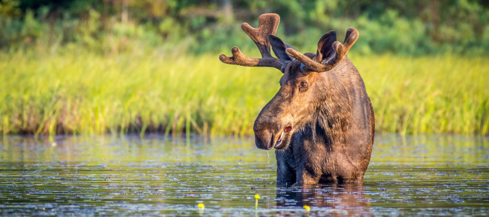
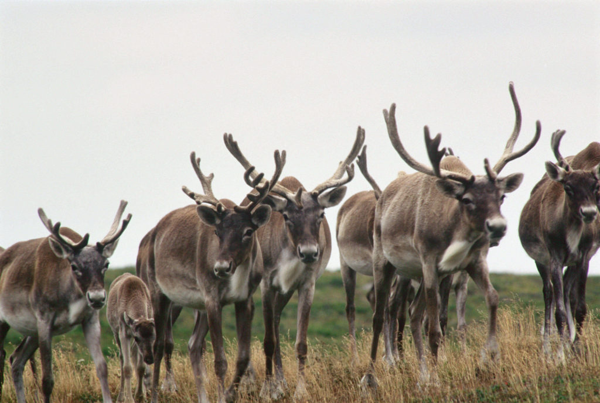

Websites About Protected Areas in Canada

Protected areas in Canada:
- National parks
- Migratory Bird Sanctuaries
- National Wildlife Areas
- Marine protection
Among the above protected areas in Canada, I am going to discuss about the National Wildlife Araes. Wildlife protection or conservation can be defined as the practice of protecting wild species like plant, animals and their habitants in order to retain healthy wildlife species or populations, and to re-establish, protect or speed up the natural ecosystems. As per Canada Wildlife Act, the purpose of wildlife areas creation and management are for the conservation, research, and interpretation of wildlife. In Canada, there are currently 55 national wildlife area available.Animals that grow up without the interence of human are known as wildlife.
- Beaver
-
 The beaver is not only one of Canada’s most magnificent species, but also the largest rodent in North America.
They have a distinctive flat tail, powerful jaws and chisel-sharp incisor teeth ideal for biting through tree trunks and branches.
Known for their productivity — we say busy as a beaver for a reason — and the vital role they play in maintaining the health
of freshwater ecosystems, beavers have earned the moniker “nature’s engineer.”
The beaver is not only one of Canada’s most magnificent species, but also the largest rodent in North America.
They have a distinctive flat tail, powerful jaws and chisel-sharp incisor teeth ideal for biting through tree trunks and branches.
Known for their productivity — we say busy as a beaver for a reason — and the vital role they play in maintaining the health
of freshwater ecosystems, beavers have earned the moniker “nature’s engineer.”
- Moose
-

Moose are the largest member of the deer family.They are extremely powerful and can travel over almost any terrain, making them a widespread species throughout Canada’s boreal forests and wetlands. They are also strong swimmers, sometimes diving several metres to feed on plants at the bottom of lakes. - Caribou  The caribou is one of Canada’s most recognizable species, inhabiting the Arctic, boreal and mountain regions. The at-risk woodland caribou that live in Canada’s southern boreal forests are depicted on our 25-cent coin, while the smaller, scrappier barren-ground caribou that roam the Arctic are also experiencing dramatic declines. Barren-ground caribou have critically provided food, clothing and cultural identity to Indigenous Peoples for thousands of years. Today, their numbers have dropped by more than 90 per cent for many herds.
The importance of wildlife conservation is as follows:
- Maintain the food chain in place to retain the ecological stability.
- Maintain the stability of natural cycles
- Prevention of dought,fire,flood, and making dessert
- Protection from world wide concern about global warming
Websites to explore the national wildlife of Canada:
- Big Creek National Wildlife Area(ON)
- Prince Edward Point National wildlife Area(ON)
- Alaksan National Wildlife Area(BC)
- Shepody National Wildlife Area(NB)
- Vaseux-Bighorn National Wildlife Area(BC)
- Last Mountain Lake National Wildlife Area(SK)
- Cap Tourmente National Wildlife Area(Queback)
Big Creek National Wildlife Area(ON):